Power BI Dashboard Test Report
Retail sales report for a Tunisian retailer (amounts in TND). Six pages, each drawn by a single private TypeScript custom visual. Every result below comes from a real interaction recorded on screen; numbers were cross-checked against the source CSVs (net 3,498.60, gross 4,105.60, 55 units, 32 orders, 33 lines, store totals, cancelled lines, refunded payments: all match).
Report pages

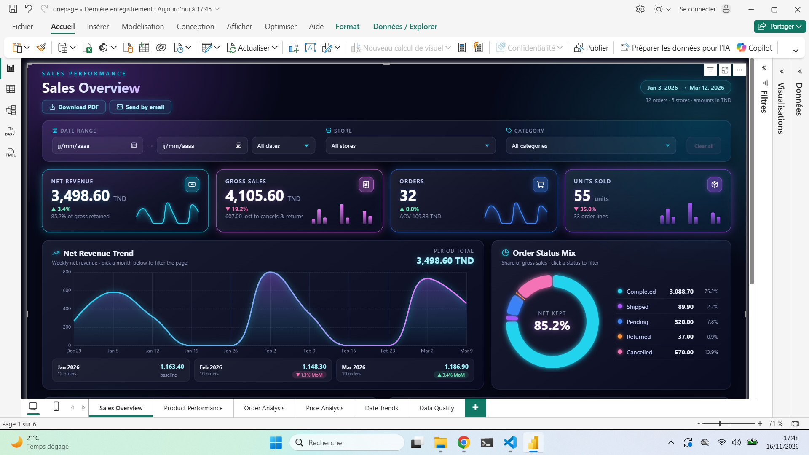
Sales Overview
Date range + quick period, Store and Category dropdowns, Clear all; 4 KPI cards with sparklines; weekly trend with month chips; status donut (click-filter); store ranking (click-filter); Product Snapshot table (sort, search, Excel); Download PDF; Send by email

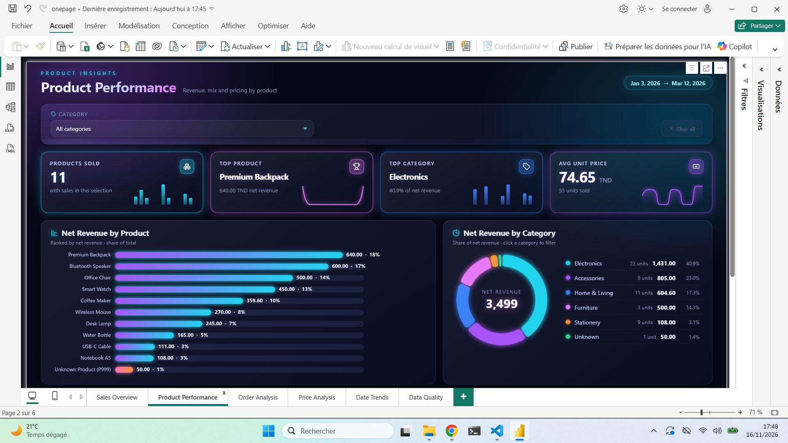
Product Performance
Category filter; 4 KPIs; net revenue by product bars; category donut (click-filter); Product Metrics table (sort, search)

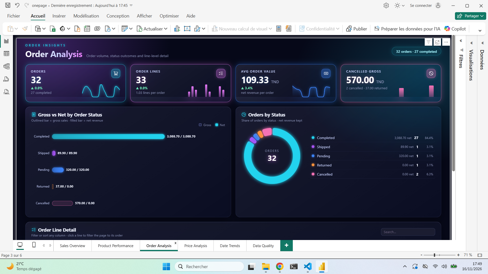
Order Analysis
4 KPIs; gross vs net by status; orders by status donut; Order Line Detail table (5 dropdown filters, search, sort, row click filters page, order chip)

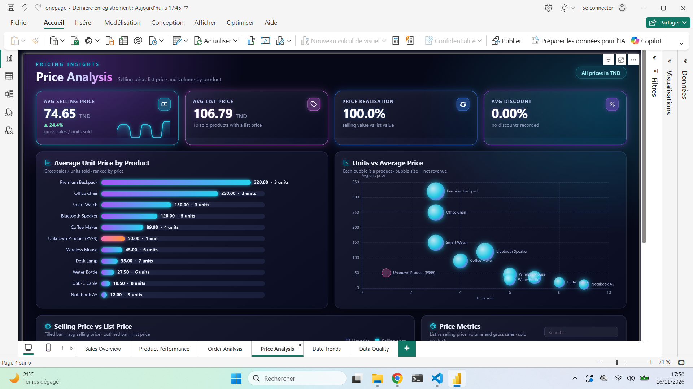
Price Analysis
4 KPIs; avg unit price bars; units vs price scatter; selling vs list price; Price Metrics table (category filter, search, sort)

Date Trends
Date range + month filter; 4 KPIs; daily trend with average line and month chips; orders/units by month; Monthly Detail with total row

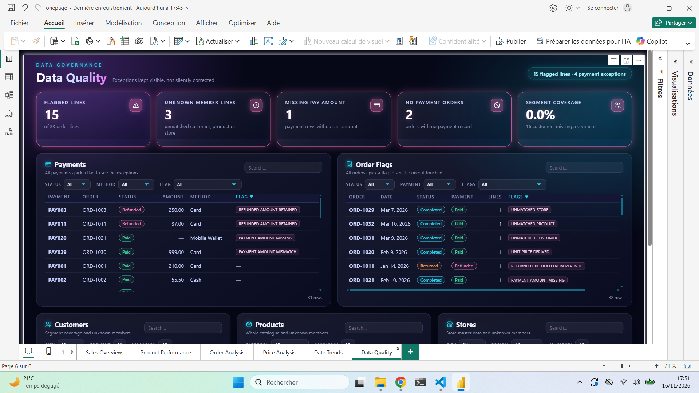
Data Quality
5 KPIs; Payments, Order Flags, Customers, Products, Stores tables (dropdown filters, search, sort, flag chips, UNKNOWN badges)
Inventory of interactive features
- Present (inside the custom visuals): dropdown filters (store, category, period, per-column table filters), date range inputs, Clear all, click-to-filter on donuts, bars, month chips and table rows, removable filter chips, glass tooltips on every chart and sparkline, sortable and searchable tables, Download PDF and Excel buttons, Send by email button, saved filter state (filters persist in the file).
- Not present in this report (checked in the PBIX definition): bookmarks, drill-down / drill-up hierarchies, drill-through pages, native slicers, navigation or action buttons, report-page tooltips, native tables or matrices, cross-filtering between visuals (each page has one visual, so all interaction is inside it).
Tests executed
| ID | Page | Feature / action | Expected | Actual | Status | Evidence |
|---|---|---|---|---|---|---|
| T01 | Sales Overview | Saved filter state Open the report | Visual restores the filters saved in the file | Opened with Store = Nabeul Centre, Category = Electronics: 360.00 TND net, 3 orders, 4 units | Pass | |
| T02 | Sales Overview | KPI sparkline tooltip Hover the Net Revenue sparkline | Glass tooltip with week and value | Tooltip "Week of Jan 26 - Net Revenue 0.00 TND" shown; its right edge is clipped by the card | Pass (minor issue) | 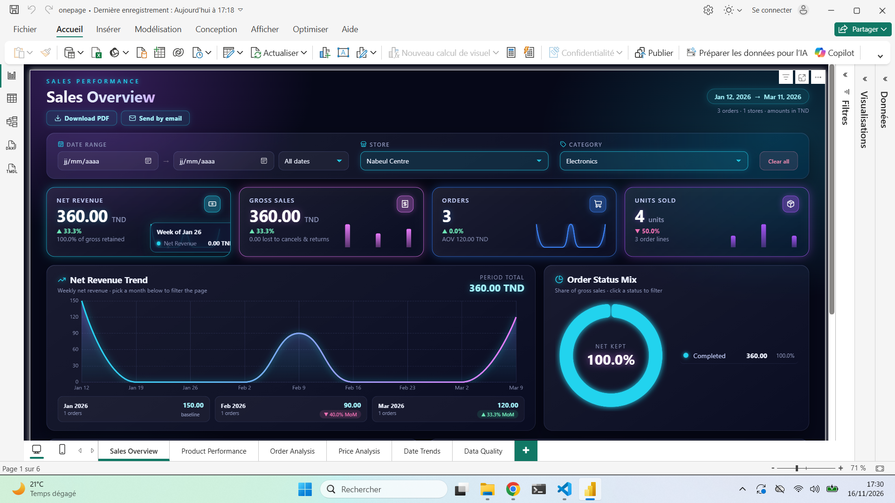 |
| T03 | Sales Overview | Clear all filters Click Clear all | All filters reset; totals = reference (3,498.60 / 4,105.60 / 32 / 55) | Store/Category back to All; Net 3,498.60, Gross 4,105.60, Orders 32, Units 55, 33 order lines; Clear all disabled | Pass | |
| T04 | Sales Overview | Chart tooltip Hover the Net Revenue Trend line | Tooltip with weekly net, gross, orders, units, AOV | Week of Feb 2: net 799.80, gross 1,119.80, 7 orders, 15 units, AOV 114.26 TND | Pass | 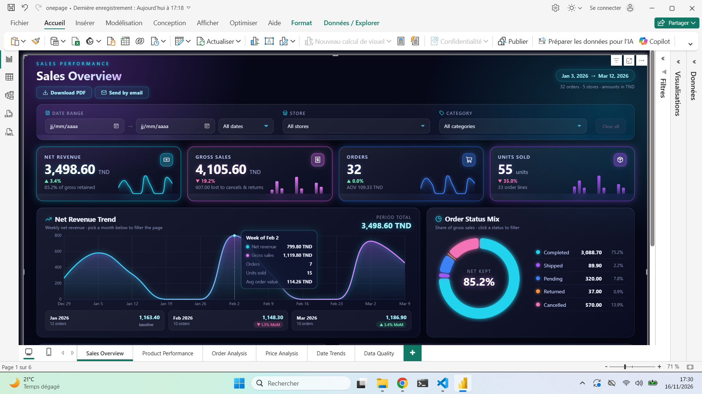 |
| T05 | Sales Overview | Store dropdown filter Store dropdown -> Tunis Lac | KPIs, trend, donut and pill update to one store | Net 548.50, Gross 585.50, 7 orders, 17 units; trend, donut (Completed/Returned) and date pill updated; Clear all enabled | Pass | 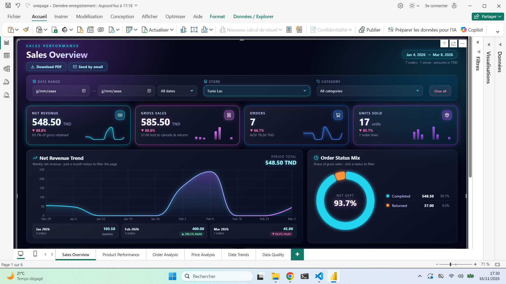 |
| T06 | Sales Overview | Month chip filter Click the Feb 2026 chip under the trend (with Store = Tunis Lac) | Date range set to Feb 2026, combined with the store filter | From 01/02/2026 to 28/02/2026, period = Feb 2026; Net 400.00 (= chip value), 3 orders, 7 units | Pass | 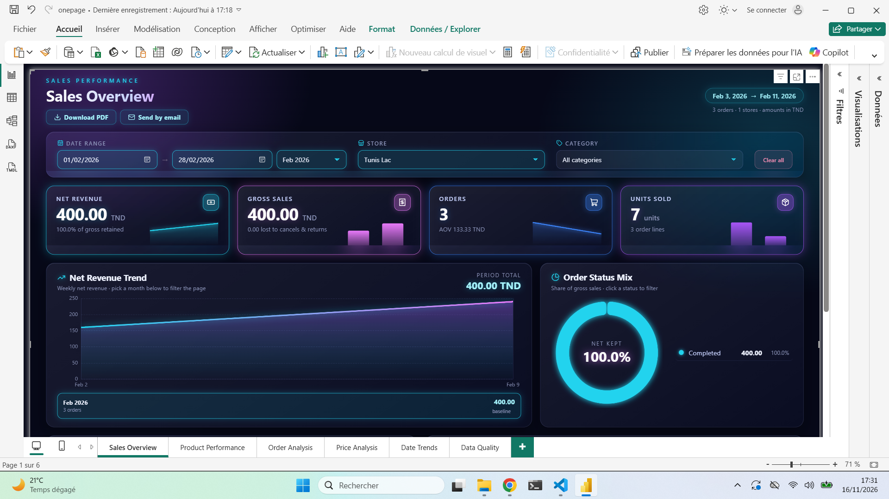 |
| T07 | Sales Overview | Donut status click-filter Click Completed in the Order Status Mix legend | Status filter chip added; legend row highlighted | "Completed x" chip appeared next to Clear all, legend row highlighted; values unchanged (all 3 orders were Completed) | Pass | 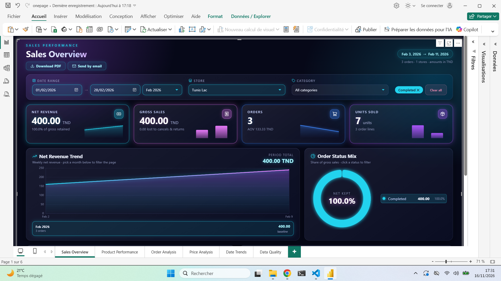 |
| T08 | Sales Overview | Store ranking chart Scroll to Net Revenue by Store | Ranked bars that add up to net revenue | Sfax Medina 1,209.80, Sousse Centre 955.40, Nabeul Centre 634.90, Tunis Lac 548.50, Unknown Store (ST99) 150.00 = 3,498.60; unknown store in pink | Pass | 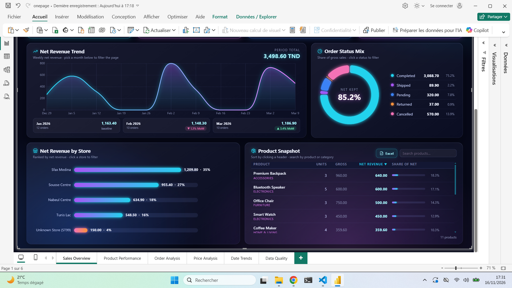 |
| T09 | Sales Overview | Table sort Click the UNITS header in Product Snapshot | Rows re-sorted by units, descending | UNITS marked as sorted; rows 9 (Notebook A5), 8, 7, 6, 6 | Pass | |
| T10 | Sales Overview | Table search Type "chair" in the product search box | Only matching products remain, with a count | Only Office Chair (Furniture) shown, footer "1 of 11 products" | Pass | 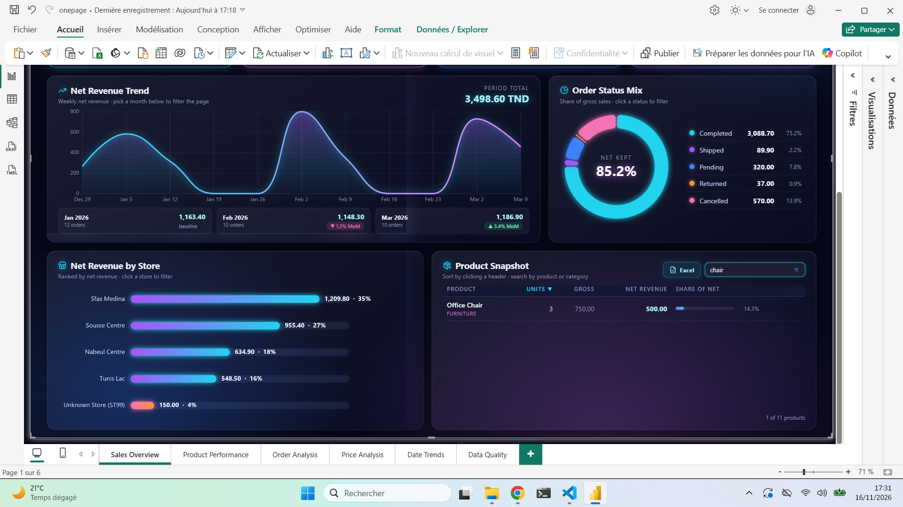 |
| T11 | Sales Overview | Chart click-filter (store bars) Click the Sfax Medina bar | Store filter set to that store | Store dropdown = Sfax Medina; Net 1,209.80 (= bar value), 7 orders, 9 units; donut Completed/Pending | Pass | 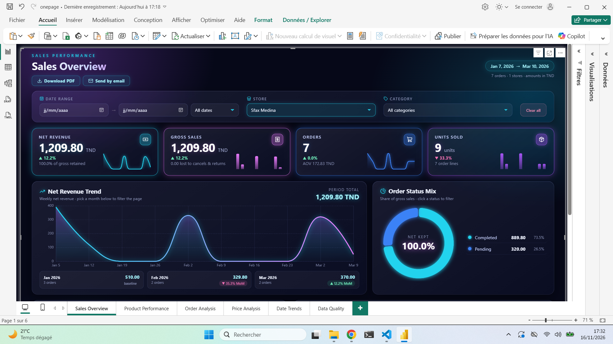 |
| T12 | Sales Overview | Download PDF Click Download PDF, then confirm | Confirmation listing active filters, then a PDF file is handed to Power BI | Visual dialog OK (lists Store = Sfax Medina, file "Sales Overview 2026-11-16.pdf"); on confirm Power BI showed "Telechargement non disponible - your administrator has restricted downloads". No file produced. | Fail (blocked by Power BI download policy) | 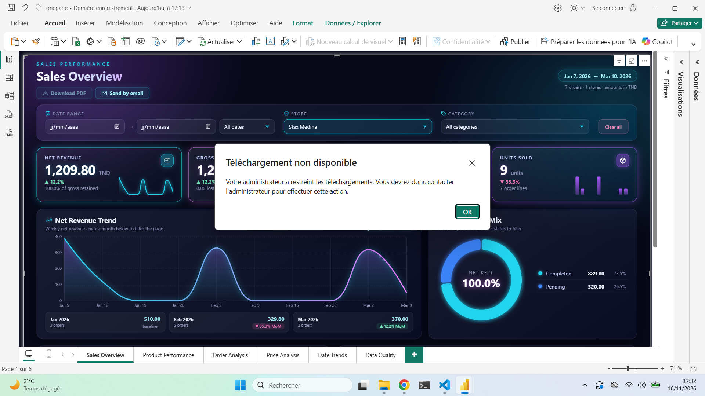 |
| T13 | Product Performance | Page navigation Click the Product Performance tab | Page loads with KPIs, product bars, category donut | Loaded: 11 products sold, top product Premium Backpack 640.00, top category Electronics 40.9%, avg unit price 74.65; category legend sums to net | Pass | |
| T14 | Product Performance | Bar tooltip Hover the Premium Backpack bar | Tooltip with net, share, gross, units, prices | Net 640.00 (18.3%), gross 960.00, 3 units, avg selling 320.00 = list 320.00 (documented no-discount exception) | Pass | 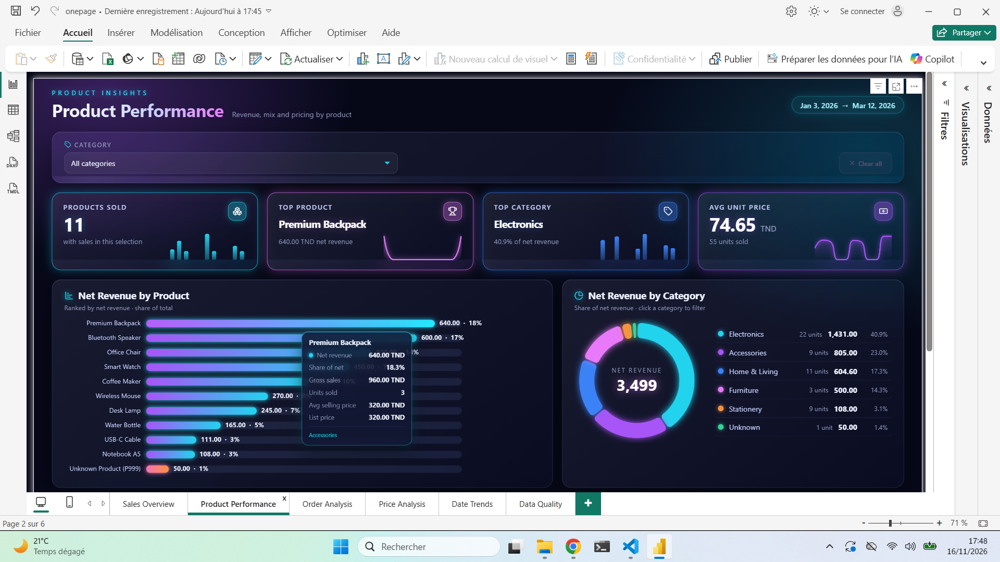 |
| T15 | Product Performance | Category click-filter Click Electronics in the category legend | Category filter applied to the whole page | Dropdown = Electronics; 4 products (600 + 450 + 270 + 111 = 1,431 = legend value); KPIs updated (avg 66.73, 22 units). Note: donut centre shows rounded net (3,499 unfiltered) | Pass | 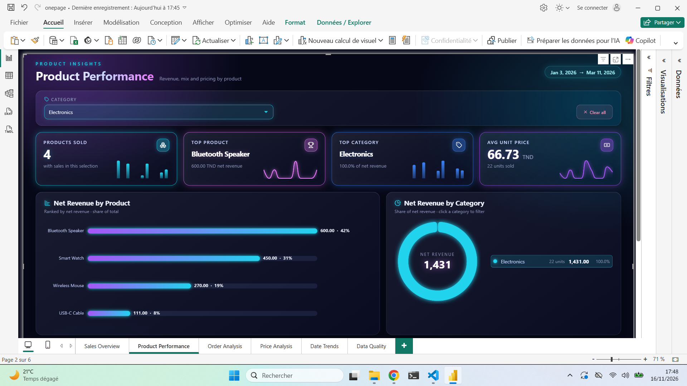 |
| T16 | Order Analysis | Page navigation Click the Order Analysis tab | KPIs and status charts load | 32 orders (27 completed), 33 lines, AOV 109.33, cancelled gross 570.00; donut and gross/net bars per status | Pass | |
| T17 | Order Analysis | Order Line Detail table Scroll to the table | All 33 lines with dropdown filters, pills and flag chips | 33 rows; filters Order/Product/Store/Status/Flags; status pills coloured; flag chips shown (e.g. DUPLICATE LINE REMOVED) | Pass | 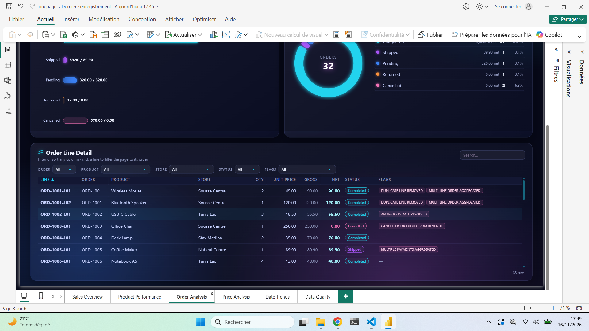 |
| T18 | Order Analysis | Table dropdown filter Status filter -> Cancelled | Only cancelled lines remain, with a count | "2 of 33 rows": ORD-1003-L01 and ORD-1017-L01 (net 0.00, ORD-1017 flagged NO PAYMENT RECORD) | Pass | 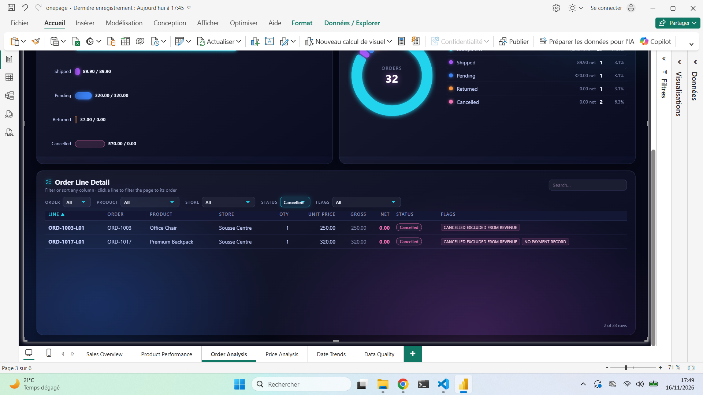 |
| T19 | Order Analysis | Row click filters page Click line ORD-1003-L01 | Page KPIs/charts filter to that order; order chip appears | Header chip "Order ORD-1003 x"; 1 order, 1 line, AOV 0.00, cancelled gross 250.00; charts show Cancelled only | Pass | 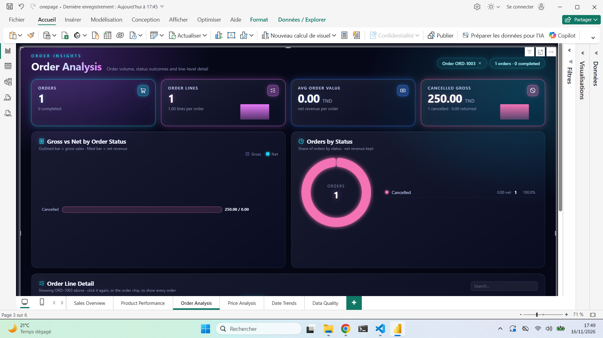 |
| T20 | Order Analysis | Clear order chip Click the x on the "Order ORD-1003" chip | Page returns to all orders | Back to 32 orders, 33 lines, AOV 109.33; chip removed | Pass | |
| T21 | Price Analysis | Page navigation + KPIs Click the Price Analysis tab | KPIs and price charts load | Avg selling 74.65, avg list 106.79 (10 sold products with a list price), realisation 100.0%, discount 0.00% "no discounts recorded" (documented exception) | Pass | |
| T22 | Price Analysis | Scatter tooltip Hover the Bluetooth Speaker bubble | Tooltip with net, share, gross, units, prices | Net 600.00 (17.1%), gross 600.00, 5 units, avg selling 120.00 = list 120.00. Minor: overlapping labels where bubbles are close (Wireless Mouse/Water Bottle, USB-C/Notebook A5) | Pass (minor issue) | 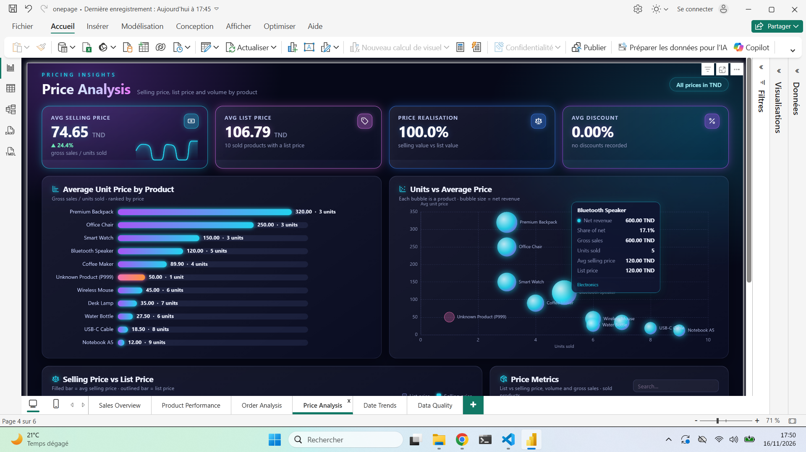 |
| T23 | Price Analysis | Price Metrics table filter Category dropdown in Price Metrics -> Electronics | Only Electronics products, with a count | "4 of 11 rows": Bluetooth Speaker, Smart Watch, Wireless Mouse, USB-C Cable; list = avg price for each | Pass | 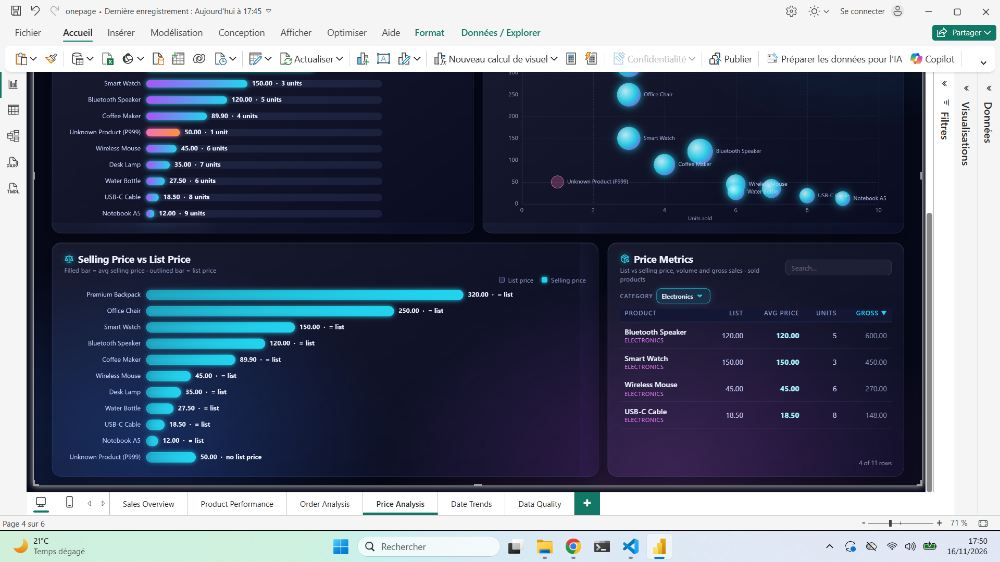 |
| T24 | Date Trends | Page navigation + KPIs Click the Date Trends tab | KPIs, daily trend, month chips | 32 active sales days of 69, avg daily net 109.33, best month Mar 2026 (1,186.90), peak day Jan 10 (320.00); months sum to 3,498.60 | Pass | |
| T25 | Date Trends | Daily chart tooltip Hover the Jan 10 peak | Tooltip with day values, marked as peak | Jan 10, 2026: net 320.00, gross 320.00, 1 order, 1 unit, "Peak day" | Pass | 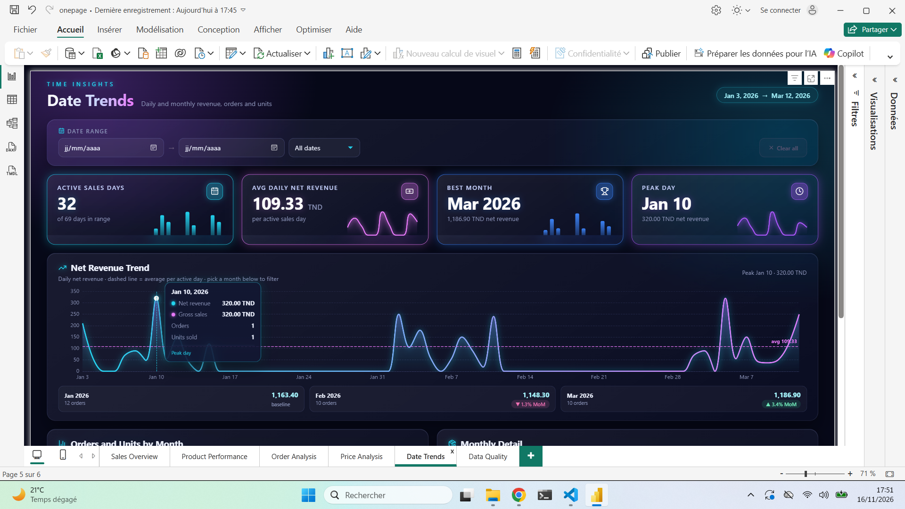 |
| T26 | Date Trends | Month chip date filter Click the Mar 2026 chip | Date range set to March; KPIs and chart rescale | From 01/03/2026 to 31/03/2026, period Mar 2026; 10 active days of 11, avg daily 118.69 (x10 = 1,186.90 = month total), peak Mar 5 | Pass | 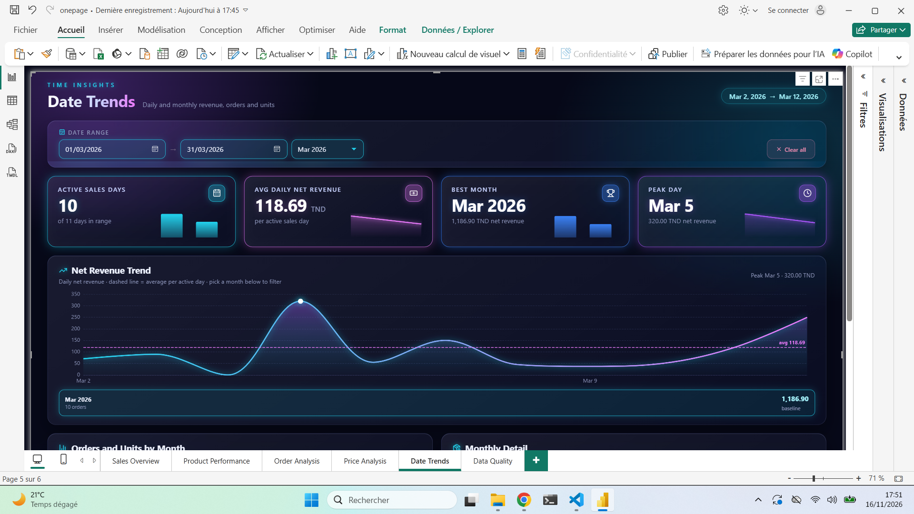 |
| T27 | Date Trends | Monthly table and total row Clear all, scroll to Monthly Detail | Per-month rows with a total equal to the reference totals | Jan/Feb/Mar rows with AOV and MoM badges; Total 32 orders, 55 units, gross 4,105.60, net 3,498.60, AOV 109.33; orders/units chart matches | Pass | 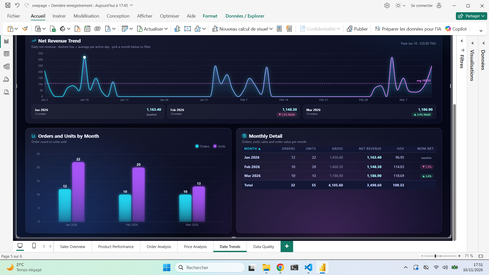 |
| T28 | Data Quality | Page navigation + KPIs + tables Click the Data Quality tab | KPIs and the 5 tables load (fed by DQ JSON measures) | 15 flagged lines of 33, 3 unknown member lines, 1 missing pay amount, 2 no-payment orders, segment coverage 0.0% (16 customers); Payments 31 rows, Order Flags 32 rows; PAY020 amount missing, PAY029/ORD-1030 999.00 mismatch, refunds on ORD-1003/ORD-1011 retained | Pass | |
| T29 | Data Quality | Table flag filter Payments Flag filter -> REFUNDED AMOUNT RETAINED | Only refunded payments remain, with a count | "2 of 31 rows": PAY003 / ORD-1003 250.00 and PAY011 / ORD-1011 37.00, both Refunded (documented retained refunds) | Pass | 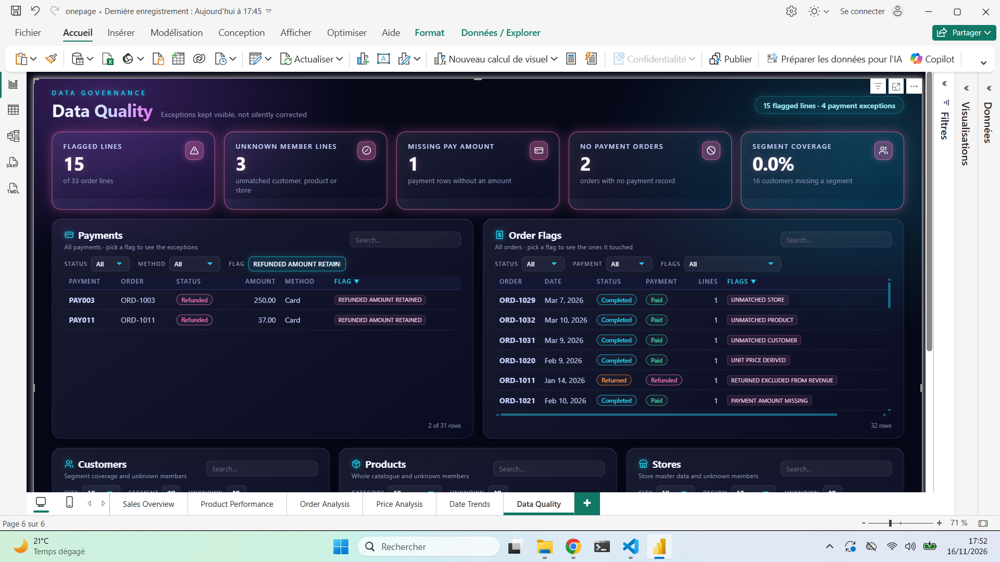 |
| T30 | Data Quality | Master data tables Scroll to Customers, Products, Stores | Three tables with filters and UNKNOWN badges | Customers 16 rows (segment empty for all), Products 14 rows (whole catalogue), Stores 7 rows with ST99 marked UNKNOWN. Minor: the last column of Customers and Products is partly cut off (horizontal scroll) | Pass (minor issue) | 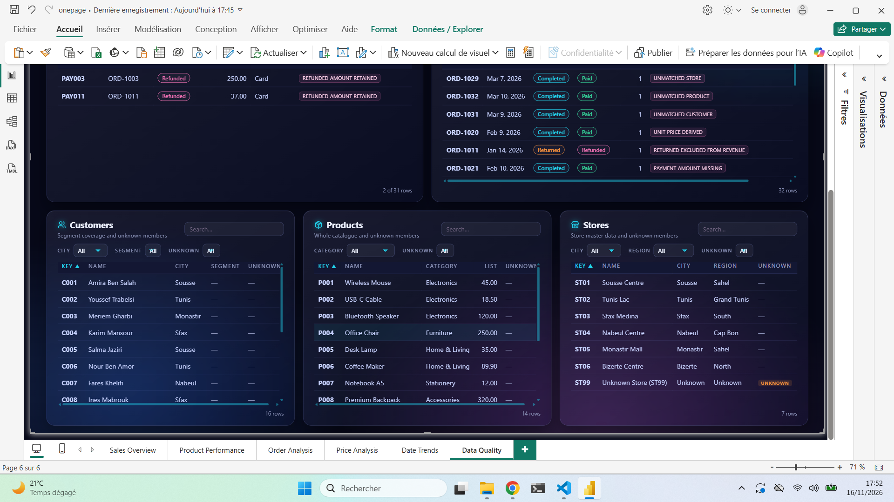 |


Issues and limitations
- Download PDF blocked (T12). The visual's confirmation dialog works, but Power BI Desktop then showed "Telechargement non disponible - your administrator has restricted downloads". Power BI only lets custom visuals save files when the user is signed in and the tenant switch "Allow downloads from custom visuals" is on; Desktop here was not signed in. Workaround: File › Export › Export to PDF. (A later build of the visual explains this to the user; the tested file predates it.)
- Minor: the Net Revenue sparkline tooltip is clipped at the KPI card's right edge (T02).
- Minor: scatter labels overlap where bubbles are close (Wireless Mouse / Water Bottle, USB-C Cable / Notebook A5) (T22).
- Minor: the last column of the Customers and Products tables on Data Quality is partly cut off behind a horizontal scrollbar (T30).
- Minor: the Product Performance donut centre shows net revenue rounded (3,499) while elsewhere it is 3,498.60.
- Documented data exceptions are shown as intended, not treated as defects: selling price = list price everywhere, ORD-1030 paid 999.00, PAY020 without amount, ORD-1007/ORD-1017 without payment, refunds on ORD-1003/ORD-1011 retained, no customer segments.
Features not tested
- Send by email: not clicked on purpose, it sends a real email.
- Excel download: the test was interrupted; it uses the same download API as the PDF and is expected to be blocked the same way in this environment.
- Typing dates into the From/To inputs (dates were set through the month controls instead), the mobile layout, and the report in Power BI Service.
- Test automation could not read inside the custom visuals (sandboxed frames), so every result was verified from screenshots.